Tak už vás nebudu napínat. Myslím, že je načase dovyprávět, jak to dopadlo s naší snídaní v Montmartru a koneckonců i se zbytkem naší dovolené, protože ač jsme měli pocit, že už jsme v Paříži nejmíň měsíc, uteklo to všechno jako voda a najednou tu byl poslední den. A řekněme si na rovinu, že nezačal vůbec špatně :D. Po menším váhání jsme se nakonec rozhodli, že tu snídani riskneme a něco po osmé jsme se vydali dolů do mrňavoučké jídelny, kde bylo místo sotva pro 20 lidí. Usadili jsme se tedy k volnému stolku a čekali, co se bude dít. Brzo za námi přišla nějaká černoška a dala nám na výběr čaj, čokoládu nebo kávu a za chvíli už před námi stál tác s prima snídaní. S plným žaludkem jsme usoudili, že hotel André Gill nakonec vezmeme na milost - tedy za předpokladu, že nám tuto snídani nenaúčtují nazítří při odjezdu 8-).
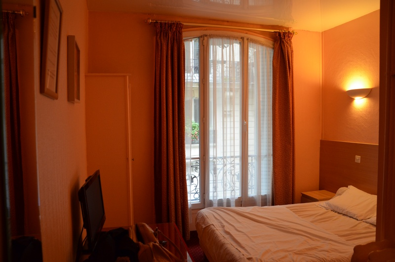
Naše bydlení v Montmartru
Paříž už nám nabídla téměř všechno, co jsme si přáli vidět. Poslední památkou, která nám zbývala, byl samozřejmě Sacré Coeur, k němuž jsme hned po snídani zamířili. Pochopitelně jsme to zase vzali přes Place du Tertre :D. Přímo z tohoto náměstí se vchází k jednomu méně nápadnému kostelu, který je (doslova) zastíněn monumentálností Sacré Coeuru. Je to kostel Saint-Pierre-de-Montmartre s románskou věží a patří k jednomu z nejstarších v Paříži. Od něj jsme pak už pospíchali přímo k Sacré Coeuru, kde se už takhle poránu tlačily davy turistů. Naštěstí to ale nebylo tak zlé, jak jsem si představovala.
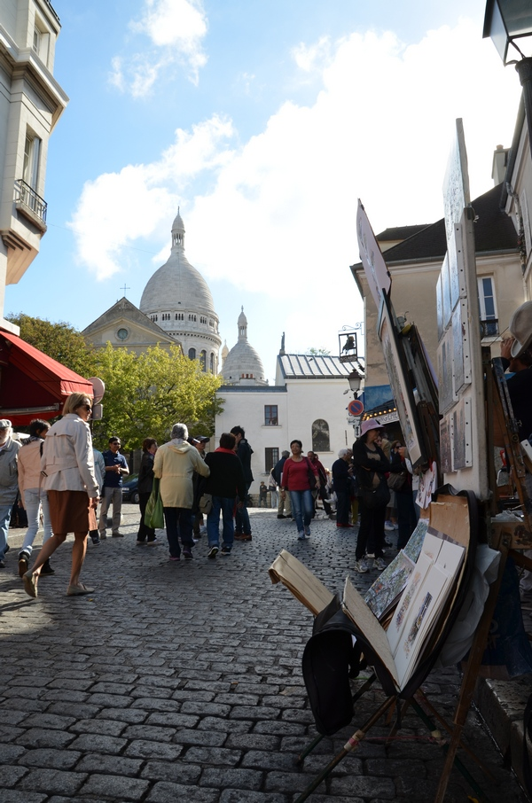
Ráno na Place du Tertre
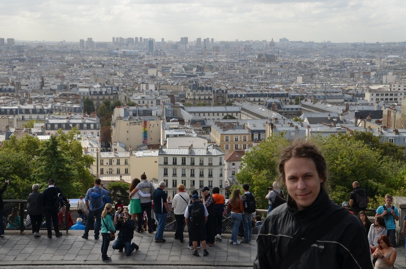
Paříž jako na dlani
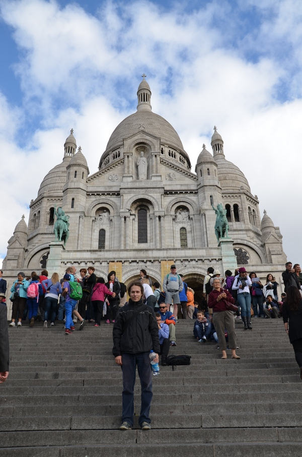
Sacre Coeur
Kolem chrámu najdete opět spoustu hudebníků - třeba harfistu, který tu vyhrává jednu hitovku za druhou - žebráků a pouličních prodavačů čehokoliv. Čeho je v Montmartru opravdu přehršel, to jsou otravné děti/mládež žebrající peníze pro nějaký (beztak neexistující) fond. Poznáte je podle toho, že s sebou nosí tužku a desky, kam si jakože zapíšou vaše jméno a kolik jste přispěli. Najdete je i u Eiffelovky, ale tady v Montmartru jich je snad ještě víc. Nejvíc se nám na ně osvědčilo spustit na ně něco česky - pak většinou okamžitě dali pokoj :D. Jednou jsem na ně vybalila prozměnu “fuck off” a taky to zabralo 8-). Jindy jsme se zase bavili tím, že jsme je schválně okatě přehlíželi a koukali se s hrozným zaujetím po památkách :D. Tato finta bohužel nezafungovala na otravné černochy (sorry, Bohušu, ale tady už tvůj výrok o tom, že nésu rasista nemůžu použít :D), kteří na vás číhají dole v parku pod Sacre Coeurem, aby vám jakože “zadarmo” umotali náramek z bavlnek, jenže pak vás nepustí, dokud jim nedáte peníze na kafe :D. Vzhledem k tomu, že nás lapili poslední den, už jsme opravdu skoro žádná eura neměli (a i kdybysme měli, těmhle bych je tedy určitě nedala), ale měla jsem co dělat, abych Péťu zachránila z jejich spárů 8-).

Sacre Coeur je snad jediné místo v Paříži, kde mají problém s focením v interiéru, a nepustí vás dovnitř, dokud si foťák neschováte do brašny. Byl to také jediný kostel, který jsme navštívili, když zrovna probíhala mše. Po povinných fotkách před chrámem, kde jsme se dali do řeči s nějakým týpkem ze Sydney, který měl úplně stejný foťák jako my, jsme radši rychle prchali zpátky do klidnějších uliček Montmartru, plných obchůdků se suvenýry a galerií. Zde jsme ulovili báječný retro plakátek se zrzavou dívkou, kterou jsem tam za euro pade nemohla nechat - úplně jsem ji viděla, jak nám visí na záchodě :D. Aby to Péťovi nebylo líto, vybral si také jeden, upoutávající na Moulin Rouge 8-).


Dopoledne v Montmartru uteklo jak voda a my už měli jenom jedno jediné přání - poslední gurmánský zážitek, zato v pravé francouzské restauraci! V obou průvodcích se svorně shodli na tom, že nejlepší francouzská restaurace pro turistu, který nemá neomezený rozpočet, je Chartier - nacházející se asi na půl cesty mezi našim hotelem a Louvrem, což nebylo nijak daleko, takže jsme vyrazili pěšky. Restaurace je poměrně nenápadně skryta a náhodný kolemjdoucí by ji nejspíš minul bez povšimnutí, interiér ale vypadá opravdu hezky a stylově. Péťa už několik dnů dopředu uvažoval, že vyzkouší šneky, ale na poslední chvíli vyměknul, a tak jsme si jako předkrm dali paštiku z husích jater a vynikající avokádo s krevetí omáčkou. Můžu říct, že předkrm mi z celé návštěvy restaurace přišel nejvíc “francouzský” :D, protože pak jsme si objednali kuře a jehněčí (jídelní lístek byl celý ve francouzštině, takže jsme se báli experimentovat) a to bylo sice dobré, ale jinak úplně obyčejné. Každopádně zážitek to byl skvělý, číšníci kmitali a my si to moc užívali :-). Po jídle jsme ještě využili místní wifi (na hotelu bychom za ni museli platit) a napsali také několik pohledů. Chartier určitě můžu doporučit - obsluha byla velmi milá, najedli jsme se dosyta a opravdu to tam nebylo drahé.
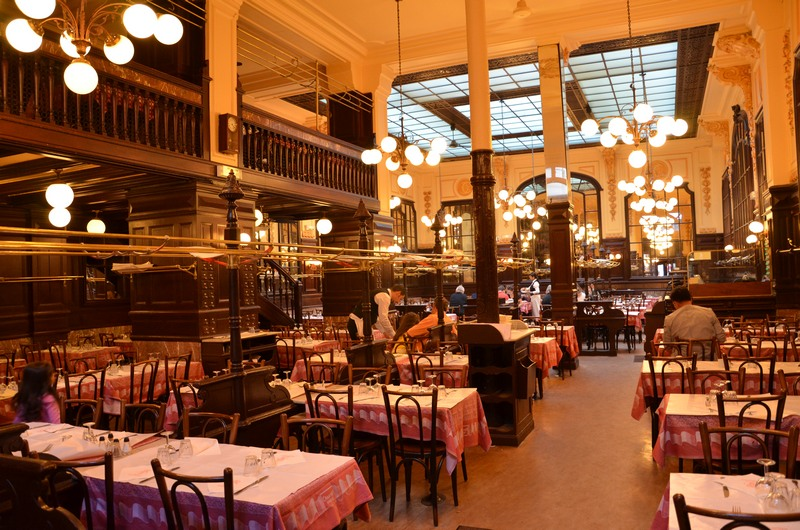
Chartier
Když jsme vylezli z restaurace, bylo ještě krásně a slunečno, a tak jsme se vydali na procházku směrem k nedaleké nákupní galerii La Fayette, o které můžu říct, že je tím nejvíc nóbl obchoďákem, ve kterém jsem kdy byla :D. Každopádně jsme se zde nezdrželi moc dlouho, protože mě nebaví chodit po obchodě, kde si nemůžu nic koupit :D. Péťa byl ze všech těch hadříků taky brzo unavený, ačkoliv když jsme došli do patra se spodním prádlem, poněkud pookřál :D. Nakonec nás nejvíce zaujalo přízemí, ve kterém se nachází oddělení potravin. Všechny ty dortíčky, makronky, čerstvé pečivo… bylo to zkrátka jedno velké sladké zlo, zvlášť když jsme se v Chartieru vzdali zákusku ve prospěch předkrmu! Naši pozornost upoutalo také oddělení s alkoholem, kde jsme našlapovali téměř po špičkách, neboť ani naše cestovní pojistka nebyla neomezená. Vždycky si říkám, jestli se najde nějaký blázen, který si koupí víno ročníku 1945 za 7000 euro :D… Nakonec jsme si špetku luxusu dopřáli i my 8-). Chňapli jsme nejlevnější víno za 3 eura, s nímž jsme si hodlali zpříjemnit poslední večer. Sice za 3 eura, ale chápejte, víno z La Fayette - kdo to může říct :D…sice mi z něj pak bylo pěkně blbě, ale uznejte, že takhle nóbl víno se nezvrací každý den 8-).
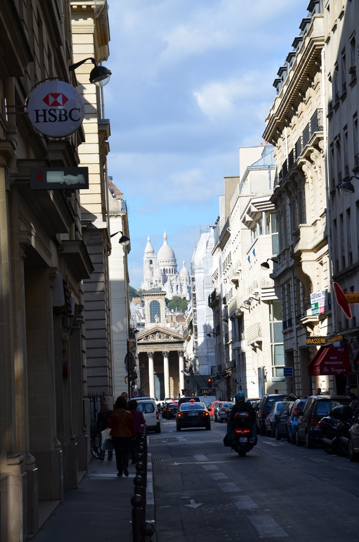
Cestou k La Fayette
Metrem jsme pak dojeli zpátky k Abbesses a šli jsme si konečně ulovit naši první francouzskou kešku u zdi lásky. V parku se nachází i dětské hřiště a zrovna bylo plné mudlů, nicméně jsme brzy zjistili, že místní babičky dohlížející na vnoučata už kešku dobře znají a rády nám napověděly :D… U zdi jsme opět strávili příjemný čas pozorováním, jak děti honí holoubátka. Stali jsme se také svědky milostného vzplanutí malé černošské holčičky, která políbila nějakého chlapečka, což její tatínek nadšeně dokumentoval na foťák :D.
Než jsme se nadáli, byl tu večer - a co jiného chcete dělat poslední večer na Montmartru, než vyrazit k Moulin Rouge a prolézt nějaké ty nemravné obchody ;-)? Náš starý známý černoch-sympaťák sedící na recepci po nás šibalsky pomrkával a vyptával se, kam máme namířeno… asi je tu zvyklý na ledacos :D. Pravdou je, že v noci to tady skutečně žije. Od Pigalle až k Moulin Rouge se rozsvítí dlouhá řada šantánů, kýčařství a sexshopů, kavárny jsou plné lidí a ulice stejně tak. Červený mlýn se točí jako o život a ochotně pózuje turistům. Jeden večer vám tu ale zaručeně bude stačit - na mě tu bylo živo až až. Krom těch nemravných výloh tady nic moc k vidění není, takže jsme nakonec brzo dali přednost našemu klidnému hotelovému pokoji.
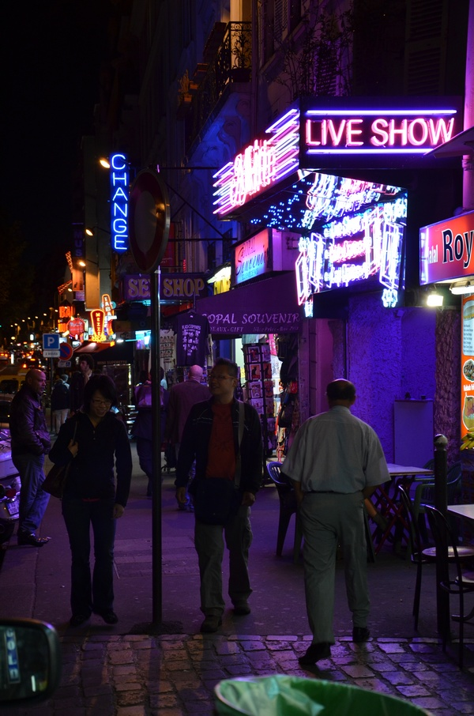
Večer to tu žije!
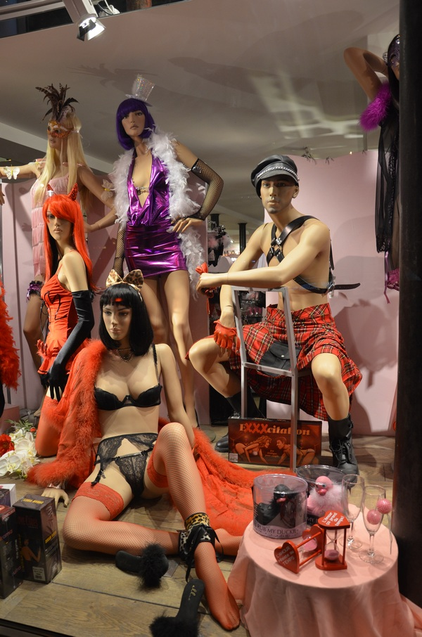
Je libo apartní obleček ;)?
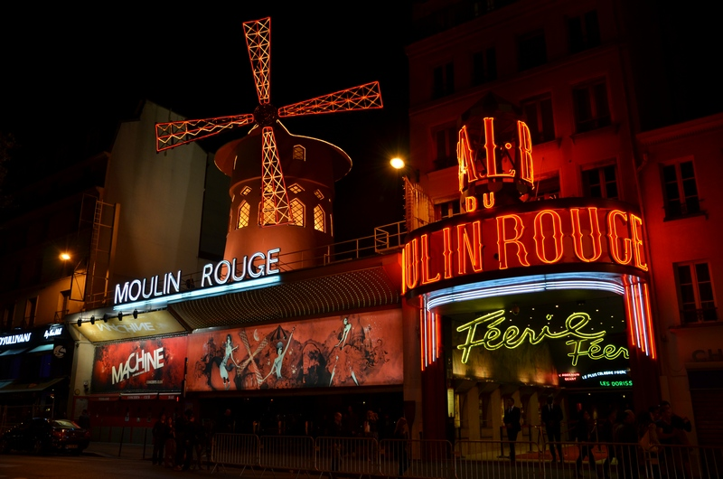
Legenda Moulin Rouge
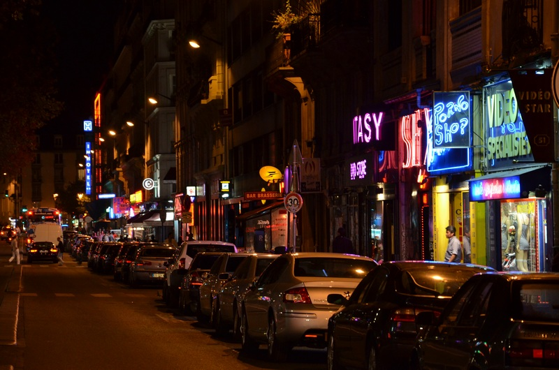
Ulička neřesti
Na poslední dopoledne už jsme si naplánovali pouze tradiční dovolenkový program - odeslání pohledů a vybírání suvenýrů. Ráno jsme zahájili nákupem lahodného pečiva z pekárny u hotelu a snídaní - jak jinak - u zdi lásky :-). Poté jsme se opět vydali do centra dění - nahoru na Place du Tertre a k Sacre Coeuru. V jednom obchůdku jsme si vybrali dva malé obrázky do ložnice (byli jsme strašně nerozhodní, takže nám vybírání zabralo asi dvě hodiny :D), chvíli jsme poseděli v parku pod chrámem a bavili se pochybnými černošskými prodejci, kteří zde nabízejí své stoprocentně fejkové zboží :D. Taky se záhy zdekovali, zabalili zboží do pytlů a prchali pryč, jakmile dostali avízo, že se blíží policejní hlídka. Nakonec jsme ještě nakoupili v Carrefouru nějaké jídlo a pití na cestu a rodině nějaké dobroty, a byl nejvyšší čas vyzvednout si na hotelu batohy a vydat se pomalu na nádraží.
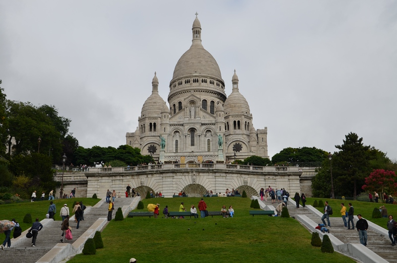
Rozloučení s Paříží
Cesta Student Agency domů by vydala na samostatnou kapitolu, ale nač kazit pozitivní dojem :D. Někteří už slyšeli, že pokud jsem na dovolené prohlašovala, že nésu rasista, při zpáteční cestě jsem si opět připomněla, že su z Čech a tady u nás je kvůli zvýšenému výskytu jisté nejmenované menšiny rasista prakticky každý. Vězte, že za naše peníze, kterými náš stát tuto nejmenovanou menšinu krmí, si pětičlenná rodina vyrazila na dovolenou do Paříže. Nezbývá, než poděkovat společnosti Student Agency za poskytnutá sluchátka, časopisy a romantické komedie, které učinily celou cestu mnohem snesitelnější. Doufám, že slečně stevardce pak zaplatili hodinu s psychoterapeutem 8-).
Co říct na závěr? Paříž byla krásnou tečkou za prázdninami a budeme na ni dlouho vzpomínat a vracet se do jejích uliček při prohlížení té hromady fotek, které jsme si přivezli. Lidé, s kterými jsme se setkali, byli v naprosté většině případů moc milí, ochotní pomoct a nebyl problém domluvit se angličtinou. Večer cestou z Verssailes, kdy jsme k Formuli přicházeli z opačné strany než normálně a nebyli jsme si jistí směrem, nám dokonce nabídla svou pomoc milá francouzská babička. Určitě je prima mít s sebou někoho, kdo Paříž zná a umí aspoň trochu francouzsky. Strašně jsem litovala, že ten jazyk neumím a ráda bych tento nedostatek ještě dohnala, protože se mi francouzština moc líbí a lidé jsou tu komunikativní, takže je tu spousta příležitostí si ji procvičit. Do příště to třeba dopiluju a rozšířím svou dosud chabou slovní zásobu :D. Tak Au Revoir! Snad se zase někdy shledáme :-)…
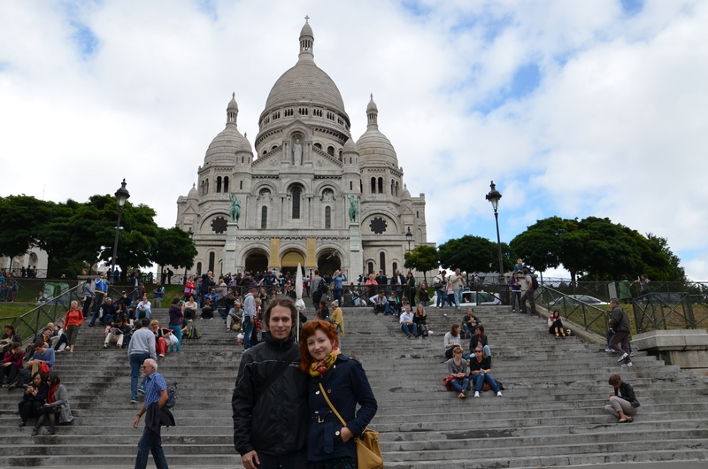
Sacre Coeur a my
Komentáře (3)
Komentáře jsou uzavřené.